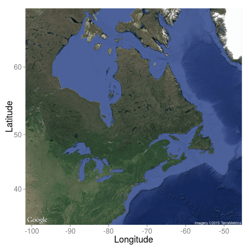

Les données ouvertes et l'univers des APIs
Ca peut vous simplifier la vie!
Rencontre interlabs
Par Steve Vissault et Isabelle Boulangeat
Les données ouvertes et les APIs, c'est quoi ?
Une donnée ouverte est une donnée numérique d'origine publique ou privée. Elle est diffusée de manière structurée avec une licence ouverte garantissant son libre accès.
Une API web est une interface/programme permettant de retirer de l'information sur un serveur de données Ce type d'interface utilise les protocoles standard d'internet (HTTP).
Objectif de la rencontre
Partager et présenter des ressources disponibles via Internet, ou des programmes (R/Python)
Les base de données spatiales et climatiques
Quelques base de données spatiales/climatiques
- La base de données cartographiques du Québec
- Worldclim:Climat mondial à une résolution de 1 km2
- DivaGIS: Shapefiles pour toutes les pays du monde
- GCM/RCM Canada: Les scénarios des CCs
- FreeGIS: Regroupe un grand nombre de données spatiales
Comment obtenir un fond de carte rapide?

Obtenir un fond de carte rapide (API Google)
library('ggmap')
theme_set(theme_grey(base_size = 18))
qmap("Quebec",zoom = 4, maptype = 'terrain',extent ="normal") +
scale_x_continuous(expand=c(0,0)) + scale_y_continuous(expand=c(0,0))+
xlab("Longitude") + ylab("Latitude")

Obtenir un fond de carte rapide (API Google)
library('ggmap')
theme_set(theme_grey(base_size = 18))
qmap("Quebec",zoom = 4, maptype = 'satellite',extent ="normal") +
scale_x_continuous(expand=c(0,0)) + scale_y_continuous(expand=c(0,0))+
xlab("Longitude") + ylab("Latitude")

Obtenir un fond de carte rapide (API Google)
library('ggmap')
theme_set(theme_grey(base_size = 18))
qmap("Quebec",zoom = 4, maptype = 'hybrid',extent ="normal") +
scale_x_continuous(expand=c(0,0)) + scale_y_continuous(expand=c(0,0))+
xlab("Longitude") + ylab("Latitude")

Les bases de données biologiques
Quelques exemples
- GBIF
- BISON
- INAT
- EBIRD
- ECOENGINE
Comment interroger ces bases de données rapidement ?
ROpenSci, une solution
They are creating R packages that allow access to data repositories that is already a familiar part of the workflow of many scientists
Liste des librairies disponibles
Site internet: http://ropensci.org/
Un exemple
require('spocc')
ecoengine_data <- occ(query = 'Anas platyrhynchos', from = 'ebird')
mapggplot(ecoengine_data)

Un exemple
require('spocc')
spnames <- c('Ursus americanus')
out <- occ(query = spnames, from = 'gbif', gbifopts = list(hasCoordinate = TRUE))
head(out)
## $gbif
## Species [Ursus americanus (500)]
## First 10 rows of [Ursus_americanus]
##
## name longitude latitude prov issues
## 1 Ursus americanus -103.29468 29.23322 gbif cdround,cudc,gass84
## 2 Ursus americanus -118.14681 34.20990 gbif cdround,cudc,gass84
## 3 Ursus americanus -72.52534 43.73511 gbif cdround,cudc,gass84
## 4 Ursus americanus -103.28908 29.28284 gbif cdround,cudc,gass84
## 5 Ursus americanus -107.70675 33.11070 gbif cdround
## 6 Ursus americanus -103.31536 29.27444 gbif cdround,cudc,gass84
## 7 Ursus americanus -72.46131 44.34088 gbif cdround,cudc,gass84
## 8 Ursus americanus -119.16081 34.56844 gbif cdround,cudc,gass84
## 9 Ursus americanus -117.46038 50.09019 gbif cdround,cudc,gass84
## 10 Ursus americanus -120.16434 39.51185 gbif cdround,cudc,gass84
## .. ... ... ... ... ...
## Variables not shown: key (int), datasetKey (chr), publishingOrgKey (chr),
## publishingCountry (chr), protocol (chr), lastCrawled (chr),
## lastParsed (chr), extensions (chr), basisOfRecord (chr), taxonKey
## (int), kingdomKey (int), phylumKey (int), classKey (int), orderKey
## (int), familyKey (int), genusKey (int), speciesKey (int),
## scientificName (chr), kingdom (chr), phylum (chr), order (chr),
## family (chr), genus (chr), species (chr), genericName (chr),
## specificEpithet (chr), taxonRank (chr), dateIdentified (chr), year
## (int), month (int), day (int), eventDate (chr), modified (chr),
## lastInterpreted (chr), references (chr), identifiers (chr), facts
## (chr), relations (chr), geodeticDatum (chr), class (chr), countryCode
## (chr), country (chr), gbifID (chr), verbatimEventDate (chr),
## institutionCode (chr), datasetName (chr), catalogNumber (chr),
## recordedBy (chr), rights (chr), occurrenceDetails (chr), rightsHolder
## (chr), eventTime (chr), occurrenceID (chr), identifier (chr), taxonID
## (chr), collectionCode (chr), identificationID (chr),
## infraspecificEpithet (chr), verbatimLocality (chr), occurrenceRemarks
## (chr), lifeStage (chr), elevation (dbl), elevationAccuracy (dbl),
## continent (chr), stateProvince (chr), georeferencedDate (chr),
## institutionID (chr), higherGeography (chr), type (chr), identifiedBy
## (chr), georeferenceSources (chr), identificationVerificationStatus
## (chr), samplingProtocol (chr), endDayOfYear (chr),
## otherCatalogNumbers (chr), preparations (chr),
## georeferenceVerificationStatus (chr), nomenclaturalCode (chr),
## individualID (chr), higherClassification (chr), locationAccordingTo
## (chr), previousIdentifications (chr), verbatimCoordinateSystem (chr),
## georeferenceProtocol (chr), identificationQualifier (chr),
## accessRights (chr), dynamicProperties (chr), county (chr), locality
## (chr), language (chr), georeferencedBy (chr), informationWithheld
## (chr), sex (chr), locationRemarks (chr), waterBody (chr), island
## (chr), collectionID (chr), depth (dbl), depthAccuracy (dbl)
##
## $bison
## Species [Ursus americanus (0)]
## First 10 rows of [Ursus_americanus]
##
##
## $inat
## Species [Ursus americanus (0)]
## First 10 rows of [Ursus_americanus]
##
##
## $ebird
## Species [Ursus americanus (0)]
## First 10 rows of [Ursus_americanus]
##
##
## $ecoengine
## Species [Ursus americanus (0)]
## First 10 rows of [Ursus_americanus]
##
##
## $antweb
## Species [Ursus americanus (0)]
## First 10 rows of [Ursus_americanus]
Si on veut pas utiliser R ?
On peut retirer les données directement des sites en lignes
ou
Utiliser des logiciels comme EcoData Retriever
Les base de données taxonomiques
Les base de données taxonomiques
Quelques exemples
- ITIS: International
- VASCAN: Canada
Comment résoudre des problèmes de nomenclature ?
Le package Taxize
Chercher des correspondances dans les bases de données taxonomiques:
require('taxize')
temp <- gnr_resolve(names = c("Helianthos annus", "Homo saapiens"))
head( temp$results )
## submitted_name matched_name data_source_title score
## 1 Helianthos annus Helianthus annus EOL 0.75
## 2 Helianthos annus Helianthus annus L. EOL 0.75
## 3 Helianthos annus Helianthus annus uBio NameBank 0.75
## 4 Helianthos annus Helianthus annuus L. Catalogue of Life 0.75
## 5 Helianthos annus Helianthus annuus L. ITIS 0.75
## 6 Helianthos annus Helianthus annuus NCBI 0.75
Le package Taxize
Corriger le nom latin:
require('taxize')
mynames <- c("Helianthus annuus", "Pinus contort", "Poa anua", "Abis magnifica",
"Rosa california", "Festuca arundinace", "Sorbus occidentalos","Madia sateva")
tnrs(query = mynames, source = "iPlant_TNRS")[ , -c(5:7)]
## submittedname acceptedname sourceid score
## 1 Sorbus occidentalos Sorbus occidentalis iPlant_TNRS 0.99
## 2 Festuca arundinace Festuca arundinacea iPlant_TNRS 0.99
## 3 Abis magnifica Abies magnifica iPlant_TNRS 0.96
## 4 Pinus contort Pinus contorta iPlant_TNRS 0.98
## 5 Poa anua Poa annua iPlant_TNRS 0.96
## 6 Madia sateva Madia sativa iPlant_TNRS 0.97
## 7 Helianthus annuus Helianthus annuus iPlant_TNRS 1
## 8 Rosa california Rosa californica iPlant_TNRS 0.99
Le package Taxize
Obtenir la classification complète:
require('taxize')
specieslist <- c("Abies procera","Pinus contorta")
classification(specieslist, db = 'itis')
## $`Abies procera`
## name rank id
## 1 Plantae Kingdom 202422
## 2 Viridiplantae Subkingdom 954898
## 3 Streptophyta Infrakingdom 846494
## 4 Embryophyta Superdivision 954900
## 5 Tracheophyta Division 846496
## 6 Spermatophytina Subdivision 846504
## 7 Pinopsida Class 500009
## 8 Pinidae Subclass 954916
## 9 Pinales Order 500028
## 10 Pinaceae Family 18030
## 11 Abies Genus 18031
## 12 Abies procera Species 181835
##
## $`Pinus contorta`
## name rank id
## 1 Plantae Kingdom 202422
## 2 Viridiplantae Subkingdom 954898
## 3 Streptophyta Infrakingdom 846494
## 4 Embryophyta Superdivision 954900
## 5 Tracheophyta Division 846496
## 6 Spermatophytina Subdivision 846504
## 7 Pinopsida Class 500009
## 8 Pinidae Subclass 954916
## 9 Pinales Order 500028
## 10 Pinaceae Family 18030
## 11 Pinus Genus 18035
## 12 Pinus contorta Species 183327
##
## attr(,"class")
## [1] "classification"
## attr(,"db")
## [1] "itis"